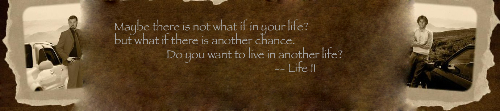

Inside the story

What if you could live your life over again? Upon discovering a 1958 book titled "Account of Time Travel on Earth Using Wave Theory," 42-year-old Max Thorning's life is thrown into chaos. Seeking answers to the book's cryptic clues, he discovers Dr. Time, a seemingly benign alien who has control of the Time Weaver, a remarkable device that can command any scene from the Earth's past. Dr. Time offers him a choice to go back into Time, to any point in his lifespan that he can vividly recall. The catch: he can only bring his memories, and can only live the future one day at a time. Follow Max's dilemma as he goes back to his 16-year-old self and tries to forge his destiny into a new one called Life II.

Q. Who is your favourite character in Life II, and why?
I'd have to say Nathan. We all know jerks like Nathan, but somehow they all manage to grab a piece of our heart and make us smile. I based Nathan on an amalgam of two characters from my life - a best friend who was so unbelievably arrogant but fascinating, and a former roommate who lived with me for two years, but always bounced off ideas off me and was so insecure and demanding; I was so thrilled upon the day he moved out.

Quotes from Life II
Dr. Time: " Latin is a dead language, yet very, very useful, as a world language."
Dr. Time: " Our race is indeed superior to yours, but Time is our master. We cannot overcome time."
Garfield: "Max, you got to do something about your future." Max: (laughing) "My future? Garfield, there are two outcomes in life." Garfield: "Which are…?" Max: "Either you're alive, or you're dead. There are a lot of possibilities in between,aren't there?"
Abby: "I don't know about you, but some husbands need a bit of direction. I'm sure you know what I mean." Max: "I do."
Watch the trailer